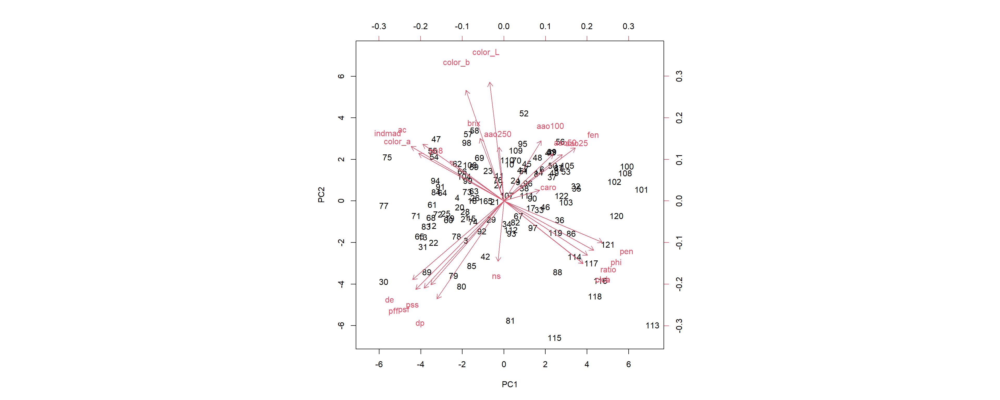
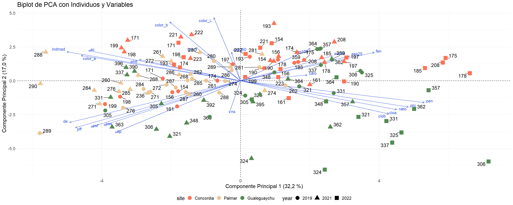
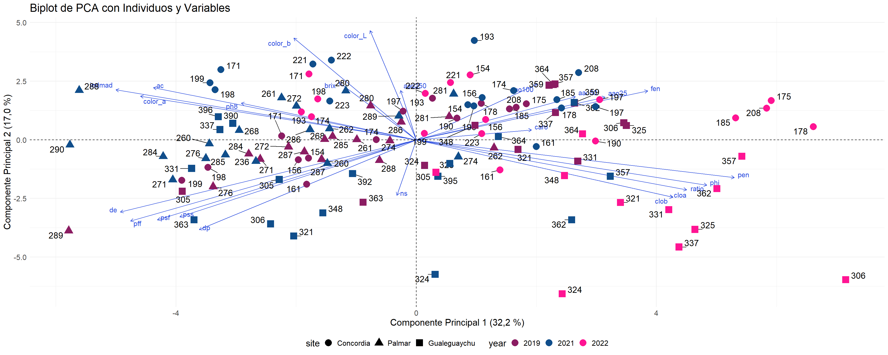
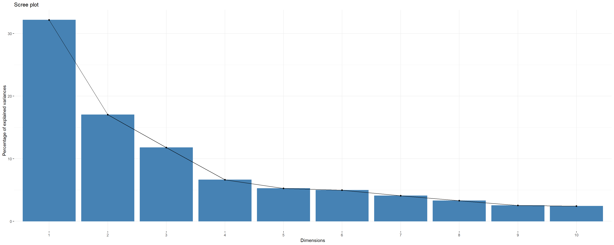
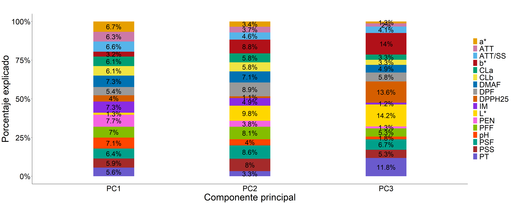

## [1] FALSE## [1] FALSE

## pen indmad de phi pff color_a ratio ac psf clob cloa pss fen
## 8.7082712411 7.7678901461 7.5341310132 7.2705888570 7.0257500859 6.5498576797 6.2933091277 5.9435799492 5.7676881362 5.6727305381 5.6599054254 4.8130690509 4.6107041658
## dp aao25 ph8 aao50 color_b aao100 caro brix color_L ns aao250
## 4.0542844888 3.0697540826 2.6356497503 2.1800227697 1.2916200662 1.2538627769 1.1450090180 0.5161977671 0.1831863342 0.0319617455 0.0209757844## color_L color_b dp pff psf pss de brix cloa clob ns aao100 ac
## 12.745813348 11.057148552 8.618510370 7.030434978 6.834619098 6.334188121 5.573811732 3.530683688 3.523779565 3.522586518 3.289616546 3.288787113 2.910148460
## indmad ratio aao250 fen phi color_a aao50 aao25 pen ph8 caro
## 2.676875546 2.666790136 2.609598306 2.553250282 2.192853376 2.029782796 1.989085450 1.947364754 1.527910696 1.441768756 0.104591814## pff de color_L dp psf color_b pss indmad pen phi clob cloa ratio ac color_a fen aao25 aao100 aao50 ph8 brix
## 14.06 13.10 12.93 12.67 12.60 12.35 11.14 10.45 10.24 9.46 9.19 9.18 8.96 8.85 8.58 7.16 5.02 4.54 4.17 4.08 4.05
## ns aao250 caro
## 3.32 2.63 1.25
## Error in `geom_text_repel()`:
## ! Problem while setting up geom.
## ℹ Error occurred in the 8th layer.
## Caused by error in `compute_geom_1()`:
## ! `geom_text_repel()` requires the following missing aesthetics: label.## pen de indmad phi pff color_a ratio psf ac clob cloa pss fen dp
## 9.497939796 8.529680718 8.329218539 8.003998495 7.748881462 7.046067543 6.799560693 6.485984091 6.243731369 5.949684046 5.934886576 5.501643584 4.921870739 4.565838552
## aao25 color_b color_L
## 2.558811161 1.617129533 0.265073105## color_L dp color_b psf pff pss de cloa clob indmad ratio phi pen
## 13.861934855 11.580254138 11.336555984 10.648967464 9.504779154 9.320922896 7.367315093 4.905521613 4.903378889 3.536766274 3.132358858 2.280262055 2.116586661
## ac color_a fen aao25
## 2.021714612 1.670050075 1.621173422 0.191457958## Error in eval(expr, envir, enclos): objeto 'cluster' no encontrado## Error in eval(expr, envir, enclos): objeto 'cluster' no encontrado
QUIM chemical variables
FIS physical variables
PFF Peso fresco del fruto
DE Diámetro ecuatorial
DP Diámetro polar
PEN Resistencia a la penetración
PSF Peso seco del fruto
PSS Peso seco semilla
IM Índice de madurez
AAO Actividad Anti Oxidante
CAR Carotenoides
CLOA Clorofila a
CLOB Clorofila b
PHE Fenoles totales
TSS Solidos solubles totales
TTA Acidez Total Titulable
POB population
IND phenotype
RES residual